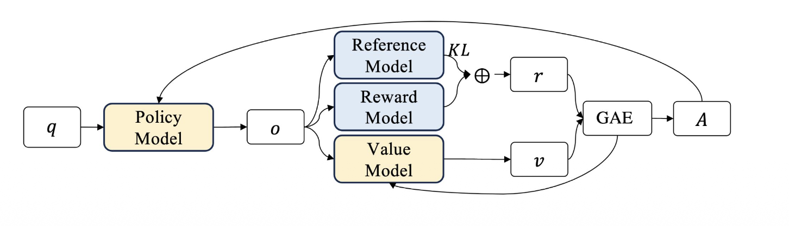
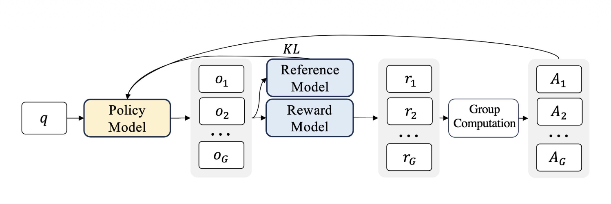
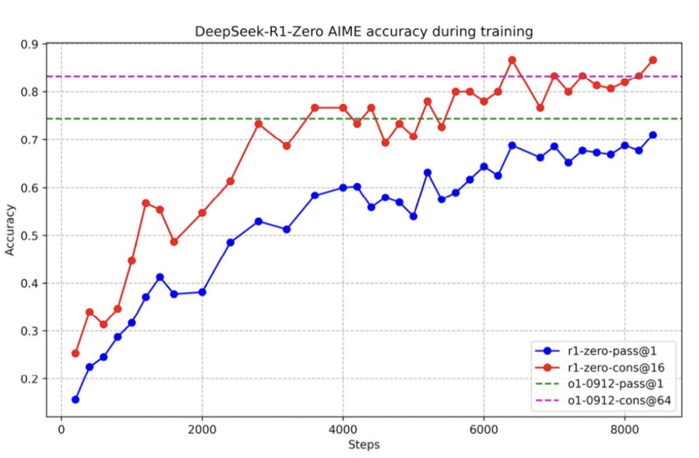
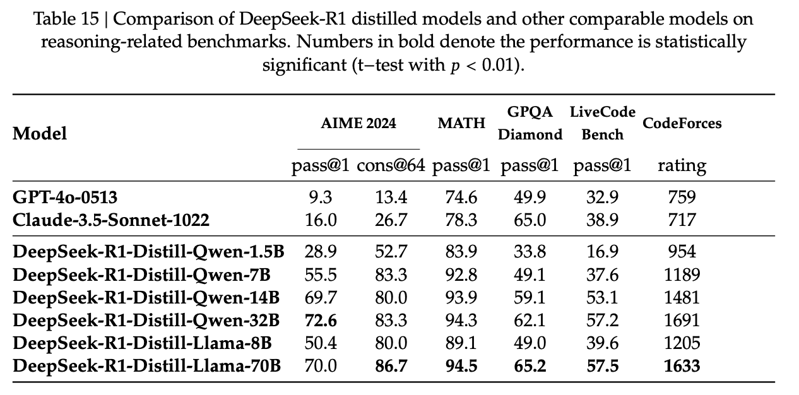
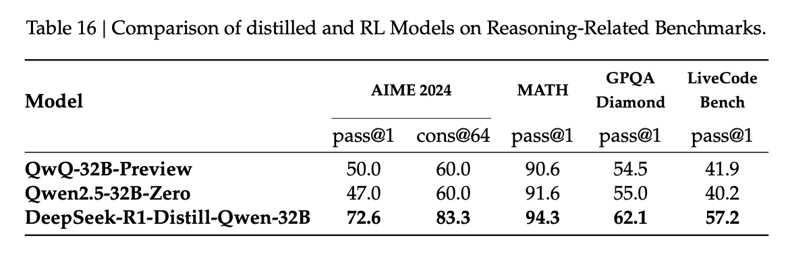

RL Reasoning Revolution
PPO, GRPO, DeepSeek R1
1. 추론을 강화학습(RL)으로 푸는 이유
왜 추론을 지도학습(SFT)으로 가르치려 하면 한계에 부딪히는가?
지도학습(SFT)의 한계
데이터 형태
\[ \mathcal{D}_{SFT} = \{ (x, y_{reasoning}, y_{answer}) \} \]
사람이 모든 과정을 직접 적어야 함.
- 비용: 사람이 직접 수많은 추론 단계를 라벨링해야 함.
- 편향(Human Bias): 인간의 추론 방식이 AI에게 최적은 아님.
- 다중 경로: 정답에 이르는 다양한 길 중 무엇을 표준으로 삼을 것인가?
강화학습(RL)의 우회적 접근법
중간 과정은 모델에게 맡기고, 최종 결과값(Answer)만 평가.
\[ R(y|x) = \begin{cases} 1 & \text{if } y_{ans} == True \\ 0 & \text{otherwise} \end{cases} \]
입력(x)
→
<think> 자유로운 탐색적 추론
→
최종 정답
→
정답 시
Reward=1
RL의 두 가지 목표
1. 보상 최대화
\[ \max_\theta \mathbb{E}[R] \]
올바른 답변의 생성 확률을 높임.
2. 기존 지식 유지 (이탈 방지)
\[ - \beta \mathbb{D}_{KL}(\pi_\theta || \pi_{ref}) \]
원본 베이스 모델에서 너무 벗어나지 않도록 페널티를 부여함.
리워드에서 Advantage로
RL의 핵심: 마지막 보상을 어떻게 Loss로 바꿀 것인가?
리워드의 한계 (절대적 평가)
맞다 / 틀리다
- 결과값만으로는 얼마나 더 잘했는지 알 수 없음
- 보상을 그대로 Loss로 사용하기 어려움
Advantage (상대적 평가)
기준점 대비 얼마나 더 좋았나?
- 보상을 바탕으로 상대적인 가치를 계산
- 이 Advantage를 통해 모델 웨이트를 업데이트
PPO (Proximal Policy Optimization)
보상을 예상치 대비 얼마나 잘했는가?(Advantage)로 변환.
\[ A_t = R_t - V(s_t) \]
- \( R_t \) = t 시점부터의 실제 누적 보상
(Return)
- \( V(s_t) \) = t 시점에서 예상되는 누적
보상
- \( A_t \) = 실제로 받은 것 - 예상했던 것 =
예상보다 얼마나 더 잘했는가
문제점: 정책 모델 외에 거대한 Value 모델을 하나 더 메모리에 올려야
함.
GRPO의 혁신
Value 모델을 완전히 제거하고, 그룹 내부 상대평가로 Advantage를 계산함.
\[ \hat{A}_i = \frac{r_i - \text{mean}(\{r_1...r_G\})}{\text{std}(\{r_1...r_G\})} \]
하나의 프롬프트에서 G개의 서로 다른 답변을 생성한 뒤 평균을 기준으로 평가함.
Shao et al. (2024). DeepSeekMath: Pushing the Limits of Mathematical Reasoning.
arXiv:2402.03300
아키텍처 비교
PPO

Policy Model
↓
o (출력 하나)
↓
Value Model로 각 토큰의 가치 추정
↓
GAE로 Advantage 계산
GRPO

Policy Model
↓
G번 샘플링
↓
G개의 결과 그룹
↓
그룹 내 상대평가로 Advantage 계산
DeepSeek-AI (2025). DeepSeek-R1: Incentivizing Reasoning
Capability in LLMs via Reinforcement Learning. Nature.
손실 함수(Loss) 구조 비교
PPO Loss
\[ L^{PPO} = \sum_{t=0}^{T-1} \min \left( r_\theta \cdot A_t, \text{clip}(r_\theta, 1 - \epsilon, 1 +
\epsilon) \cdot A_t \right) \]
GRPO Loss
\[ L^{GRPO} = L^{PPO} - \beta \mathbb{D}_{KL}[\pi_\theta || \pi_{\text{ref}}] \]
PPO 모델의 구조를
차용하되, KL Divergence 페널티를 추가함.
- Ratio (\( r_\theta \)): 이전 모델 대비 토큰 선택 확률 변화율
- Clipping \( (1-\epsilon, 1+\epsilon) \): 정책이
급격하게 변하는 것을 방지
- KL Divergence \( \mathbb{D}_{KL} \): 범용적인 언어 능력 파괴 방지
3. Stalled Performance 문제
길어지는 응답 길이와 길이 정규화의 함정
응답 토큰 길이가 폭주하는 현상
일정 스텝 이후, 모델이 성능은 그대로인데 응답만 길게 쓰는 패턴을 보임.
DeepSeek-AI (2025). DeepSeek-R1: Incentivizing Reasoning
Capability in LLMs via Reinforcement Learning. Nature.
원인은 기존 수식의 페널티 구조
전체 GRPO 손실 함수 내 길이 정규화 항
\[ \mathcal{J}_{GRPO}(\theta) = \frac{1}{G} \sum_{i=1}^G \color{#e6005c}{\frac{1}{|o_i|}} \sum_{t=1}^{|o_i|}
\left[ \min\left( \frac{\pi_\theta(o_{i,t})}{\pi_{ref}(o_{i,t})} \hat{A}_i, \text{clip}(\cdot) \hat{A}_i
\right) - \beta \mathbb{D}_{KL} \right] \]
위 식에서 볼 수 있듯, 각 토큰이 받는 어드밴티지는 1 / |o_i| 에 의해 응답 길이만큼 나누어짐.
| 상황 (동일한 오답) |
응답 길이 (|o_i|) |
토큰당 감점 폭 (\( A_i / |o_i| \)) |
모델의 학습 결과 |
| 짧게 쓴 오답 |
10 토큰 |
-1.0점 (강한 페널티) |
단답형 출력 회피 성향 |
| 길게 쓴 오답 |
100 토큰 |
-0.1점 (페널티 희석) |
불필요한 응답 길이 연장
|
해결책: DAPO 와 Dr. GRPO
DAPO 방식
\[ \frac{1}{\sum_{i=1}^G |o_i|} \sum_{i=1}^G \sum_{t=1}^{|o_i|} \]
전체 그룹 길이의 합으로 나누어, 긴 응답과 짧은 응답이 공평한 비중의
페널티를 받게 함.
Dr. GRPO 방식
\[ \frac{1}{G} \sum_{i=1}^G \sum_{t=1}^{|o_i|} \]
개별 답변 길이 정규화를 아예 없애고, 텍스트가 극단적으로 길어질 때만
명시적인 감점을 부여함.
DAPO: An Open-Source LLM Reinforcement Learning System at Scale, Yu et al., 2025.
Understanding R1-Zero-Like Training: A Critical Perspective, Liu et al., 2025.
4. 거인을 조립하다: DeepSeek R1
순수 RL의 한계를 극복한 파이프라인
R1-Zero의 한계
성공: 추론 벤치마크 평가

실패: 가독성
순수 강화학습 모델은 정답은 완벽하게 맞히지만 언어를 섞어 쓰고, 포맷이 정리되어 있지 않아 결과물을 인간이 읽기 매우 힘듦 (Language
Mixing).
DeepSeek-AI (2025). DeepSeek-R1: Incentivizing Reasoning
Capability in LLMs via Reinforcement Learning. Nature.
DeepSeek R1 파이프라인
V3 Base
1. 콜드스타트 SFT (통제된 시작)
2. 추론 GRPO
3. 범용 SFT
4. 종합 GRPO (DeepSeek R1)
수학/코딩 추론 능력과 일반 대화 모델 능력을 완벽히 결합.
Distillation (지식 증류)
작은 모델로 똑똑한 추론 능력을 이식하다.
DeepSeek R1 (671B)
↓
추론 궤적 추출
고품질
CoT 학습 데이터
↓
SFT 지도학습 전파
Llama / Qwen (7B, 14B)


RL 단계 없이도 SFT만으로 아주 뛰어난 추론 성능을 발휘할 수 있음을
증명.
DeepSeek-AI (2025). DeepSeek-R1: Incentivizing Reasoning
Capability in LLMs via Reinforcement Learning. Nature.